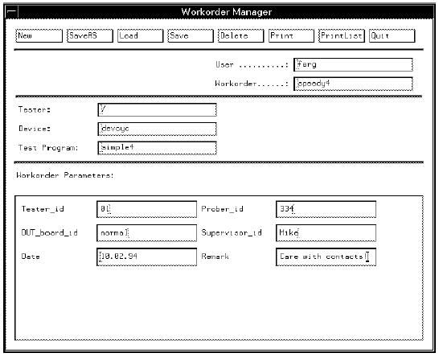

WORKORDER_MANAGER_INPUT
This expression allows you to define input data for your workorder, in the Workorder Manager Screens. For example, the following lines in the wafer_auto application model file,
{lot:
SCREEN_DIALOG
:
:
*Tester_id=WORKORDER_MANAGER_INPUT/REGEXP(List:nn);
*Prober_id=WORKORDER_MANAGER_INPUT/REGEXP(real);
*DUT_board_id=WORKORDER_MANAGER_INPUT/REGEXP(string);
*Supervisor_id=WORKORDER_MANAGER_INPUT;
*Date=WORKORDER_MANAGER_INPUT;
*Remark=WORKORDER_MANAGER_INPUT;
result in the Workorder Manager Screen is shown in the figure below.
